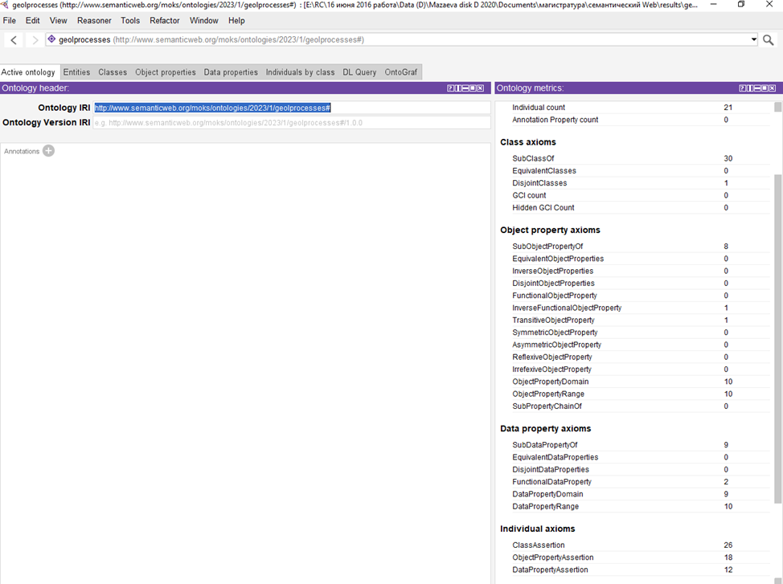

Федеральное государственное бюджетное образовательное учреждение
высшего образования
Иркутский государственный университет
Институт математики и информационных технологий
Кафедра информационных технологий
Отчет по производственной технологической практике
Специальность 01.04.02 «Прикладная математика и информатика. Семантические технологии и многоагентные системы»
Геоинформационная система береговой зоны крупного искусственного водохранилища
Магистрант гр. 02123-ДМ-2022
Мазаева О.А
Руководитель: к.т.н., доцент
Черкашин Е.А.
Иркутск – 2024
Стр.
Введение Описание предметной области
1. Методики прогнозирования состояния берега водохранилища
Информационные объекты концептуальной модели берега
Геоинформационные системы
Инструментарий современных ГИС
ГИС в исследовании береговой линии водохранилища
Методика как решать задачу
Технология (создания ГИС системы?)
2. Проектирование и реализация ИС прогнозирование береговой линии [на основе ГИС]
Требования к ИС береговой линии
Информационное обеспечение ИС
Постановка задачи автоматизации трассировки контура
Архитектура системы
Информационное моделирование предметной области
Процедура распознавания береговой линии на изображениях
Обработка изображений для автоматизации выделения береговой линии () или линейных объектов?
Сервис Segment Anything
Приобретение характеристик
Распознавание интересующего контура
Преобразование контура в векторный формат
3. Тестирование ИС
Заключение
Список использованных источников
Фундаментальные исследования уникальных экологических систем, какой является береговая зона крупного водного объекта, проводимые в мире и России, базируются на мониторинге, хранении и обработке больших объемов научных пространственно-временных данных и знаний, а также на использовании распределенных информационно-вычислительных технологий и их приложений, современных сетей передачи данных.
Береговая зона крупного водохранилища. Водохранилища – регулируемые водохозяйственные и природные объекты, формирующие единую природно-техническую систему.
Рисунок 1 - Карта районирования берегов Братского водохранилища
по ширине абразионного размыва
Объектом исследования является Братское водохранилище (рисунок 1). На карте красным цветом выделены участки береговой зоны с высокой интенсивностью абразионного размыва (ширина абразивного размыва 50-200 м).
При долгосрочном прогнозе абразионной переработки берегов Братского водохранилища на 25-летний период эксплуатации, сделанного Г.И Овчинниковым в 90-х годах прошлого века [Овчинников, Павлов, Тржцинский, 1999], максимальные размывы (до 100 м) прогнозировались для участков, сложенных рыхлыми отложениями основной акватории правого берега водоема.
Протяженность берегов Братского водохранилища составляет 6030 км, около 38 % сложено рыхлыми четвертичными отложениями. Абразионные берега составляют 2056 км (34,2 % общей протяженности берегов) [Овчинников, 2003]. Максимальная ширина размыва характерна для склонов, сложенных рыхлыми образованиями (пески, лессовидные супеси и суглинки), минимальные – для скальных и полускальных грунтов (песчаники, доломиты, известняки, алевролиты, аргиллиты, мергели) (рис.1).
Результаты долговременного мониторинга показали, что после более 50-ти лет эксплуатации Ангарских водохранилищ береговая зона все еще не достигла стадии устойчивого равновесия. Сохраняется стабильная динамика абразионного размыва, особенно береговых склонов, сложенных рыхлыми отложениями (рис. 1).
На рисунке 2 показаны многолетние изменения уровня воды в водохранилище — основного фактора, вызывающего деградационные геологические процессы, частично находящегося под управлением технологических процессов каскада электростанций Иркутской области.
Рисунок 2 - Изменение уровня Братского водохранилища за период 1967-2009 г.г.(по данным метеостанции Балаганск).
От стабильности береговой зоны зависит возможность ее технического, рекреационного и др. видов использования, особенно в условиях, когда уровень воды регулируется технически в достаточно большом диапазоне значений сезонного (2-3 м) и многолетнего регулирования (до 10 м).
Рисунок 3 - Схема строения береговой зоны водоема.
За положение береговой линии принята последовательная линейная характеристика - положение бровки берегового уступа, которое изменяется под воздействием волновой деятельности водохранилища и процессов разрушения берегового уступа.
Для формирования политики использования береговой зоны необходимо проводить мониторинг геологических процессов береговой зоны водохранилищ, для этого необходимо проводить каталогизацию и хранение данных, включая исторические данные и современные. До использования спутниковых изображений для получения первичных данных о контуре береговой линии использовались полевые измерения и исследования и аэрофотосъемка. В настоящее время стали доступны съемка со спутника, получение ортофотопланов при помощи квадрокоптеров, измерения ключевых точек при помощи GPS/GLONASS.
Количество данных, таким образом, становится достаточно большим и требует цифрового представления в виде информационной системы, отражающей данные на некоторую координату. В связи с этим одним из важнейших компонентов информационных ресурсов являются геоинформационные системы, поскольку они позволяют согласованно представлять и системно анализировать информацию о географически связанных объектах природной среды и при этом собирать и хранить данные с автоматизированных средств наблюдений и классических средств сбора, осуществлять их автоматизированную обработку и представление в картографическом виде.
Для мониторинга краткосрочной и долгосрочной динамики изменений протяженных побережий в Европе (Kabuth A. K., Kroon A., Pedersen J. B. T., 2014), странах Юго-Восточной и Южной Азии [Isha I. B., Adib M. R. M., 2020; Matin N., Hasan G. M. J., 2021] применялась DSAS.
Цель работы - разработать геоинформационную систему крупного водного объекта для мониторинга береговой зоны
Задачи
Проведение полевых исследований (снятие координат)
Оцифровка данных береговой линии (координат, спутниковых изображениях, аэрофотоснимков, ортофотопланов)
Реализация автоматизации некоторых этапов п.2 на основе современных технологий
Организация доступа к внешним данным (уровни водохранилища)
Прогнозирование динамики береговой зоны
Оценка влияния опасных факторов на технические и социальные объекты в береговой зоне.
Научная новизна заключается в использовании новых алгоритмов распознавания объектов на растровых изображениях (линии бровки берегового уступа) при условии ограниченности вычислительных ресурсов и информационного обеспечения.
Методики прогнозирования состояния берега водохранилища
Прогнозирование изменений геологической среды является одним из приоритетных научных и прикладных направлений в науках о Земле. Мониторинговые исследования за изменениями природно-технических систем и их отдельных элементов являются надежной базой для прогнозных оценок.
В 1972 году на Стокгольмской конференции ООН Р. Манном впервые было введено понятие глобального мониторинга окружающей среды (global environmental monitoring system — GEMS), которым он обозначил систему повторных наблюдений окружающей среды в пространстве и времени. С этого момента термин «мониторинг» вошел в нашу научную литературу и стал применяться в разных областях знаний, в том числе и в области геологии [Иванов, Тржцинский, 2001]. В области инженерной геологии стационарные наблюдения сопутствовали инженерным изысканиям на всех сложных объектах. Первая оползневая станция ЦНИГРИ в Крыму была организована в 1930 году.
Для Ангарского каскада ГЭС лабораторией инженерной геологии и геоэкологии ИЗК СО РАН была создана система геодинамических полигонов и стационаров, расположенных в различных ландшафтных условиях. Систематические ежегодные наблюдения за отдельными видами ЭГП проводились на 77 участках, среди которых на 43 изучалась абразия, на 15 – гравитационные процессы, на 11 – карстово-суффозионные и на 8 – эрозионные [Козырева, Бабичева, Мазаева, 2018].
Целью мониторинговых исследований является изучение режима и условий функционирования локальных береговых геосистем и их изменения под воздействием техногенных факторов, связанных с созданием и режимом эксплуатации водохранилища.
В нашей стране наиболее применяемыми в настоящее время являются методы, предложенные Е. Г. Качугиным (1959), Г. С. Золотаревым (1969), Н. Е. Кондратьевым (1960), Е. К. Гречищевым (1961) Л. Б. Розовским, И. П. Зелинским (1975), И. А. Печеркиным (1969), Институтом земной коры СО РАН (1976 г.), ПНИИСом (Рагозин и Бурова, 1993) и другими научными коллективами.
По различным критериям все виды прогнозов переработки берегов водохранилищ могут быть объединены в три разных класса (рис.) [Иванов, Тржцинский, 2001]. Так, временные прогнозы подразделяются на краткосрочные (предупредительные) с периодами прогнозирования от 1 до 10 лет и долгосрочные (перспективные), включающие прогнозы на 10 и более лет, в том числе на конечную стадию развития берега. Пространственные прогнозы объединяют в себе локальные, характеризующие переработку по отдельным профилем (профильный прогноз) или участкам (площадной прогноз) и выполняемые в масштабах 1:1000—1; 10000; и региональные, характеризующие переработку по периметру всего водохранилища или его отдельной части и производимые в масштабах 1:25 000—1:200000. По теоретическим предпосылкам обоснования расчетов все методы подразделяются на три группы — энергетические, геологического подобия и вероятностно-статистические (или стохастические, по Г. С. Золотареву (1990)).
Рис.. Схема прогнозов процессов переработки берегов водохранилищ при инженерных изысканиях для освоения и защиты прибрежные территорий [по Рекомендациям..., 1986].
Прогнозы, выполняемые на водохранилищах: 1 — проектируемых и эксплуатируемых; 2 — эксплуатируемых: а — на всех стадиях изысканий и проектирования инженерной защиты, б — в процессе строительства и эксплуатации; 3 — последователность выполнения прогнозов.
В научно-технической литературе известны три группы методов прогнозной оценки переработки берегов водохранилищ:
1) энергетические (Качугин Е.Г. [1], Кондратьев Н.Е. [2] и др.);
2) сравнительно-геологические (Золотарев Г.С. [3], Розовский Л.Б. [4] и др.);
3) вероятностно-статистические (Епишин В.К., Экзарь н В.Н. [5]).
Энергетические методы при прогнозе преимущественно учитывают энергию волнения (гидрологический фактор), область применения их ограничена простыми и однородными в инженерно-геологическом отношении условиями, характеризуются низкой точностью прогнозной оценки. Для их обоснования требуются значительные трудозатраты по каждому расчетному поперечнику. Применимы только на первой стадии переработки берегов действующих водохранилищ.
Сравнительно-геологические методы основаны на аналогиях природно-техногенных условий водохранилищ. Основные трудности, снижающие точность прогнозных оценок в этих методах связаны с подбором надежных аналогов и выбором критериев подобия, что редко удается сделать в реальных условиях.
Метод вероятностно-стохастических моделей [5] по своей технической сущности наиболее близок к предлагаемому техническому решению (прототип). Этот метод заключается в учете зависимостей переработки берегов от различных природно-техногенных факторов по данным режимных наблюдений с построением стохастических моделей процесса. Его основной недостаток, несмотря на большие трудозатраты снижающий точность прогнозной оценки, заключается в недоучете общих закономерностей развития процесса, стадийности формирования берегов, требует большого объема режимных наблюдений по каждому расчетному поперечнику в отдельности.
В Институте земной коры СО РАН Е. К. Гречищевым (1961). был разработан энергетический метод, позволяющий производить прогноз ширины зоны размыва на разное количество лет. Для прогноза необходимы сведения по ветровому волнению, определяющему энергию, знание уровенного режима водоемов, точные инженерно-геологические разрезы по расчетным профилям и данные по размываемости грунтов. Ширина зоны размыва определяется через объем размытых горных пород.
Позже по результатам исследований динамики берегов водохранилищ Ангарского каскада ГЭС и выявленных закономерностей развития береговой зоны был сделан прогноз размыва берегов на 25-летнюю стадию развития [Овчинников, Павлов, Тржцинский, 1999]. Расчеты производились по методике, разработанной в Институте земной коры СО РАН, учитывающей весь спектр факторов (геолого-геоморфологические, морфометрические, гидродинамические и техногенные), влияющих на динамику берегов. Кроме того, использовались прогнозно-диагностические модели динамики берегов, построенные на основе многолетних рядов наблюдений по стационарным участкам, расположенным в различных геолого-геоморфологических и гидродинамических условиях. Учет влияния колебания уровня воды в водохранилищах оценивался его повторяемостью на определенных отметках в пределах выделенных полутораметровых подзон. Прогноз был выполнен с учетом того, что в 50 % случаев уровень воды будет находиться в пределах верхней подзоны размыва.
Геоинформационные системы (ГИС) - это автоматизированные системы, функциями которых являются сбор, хранение, интеграция, анализ и графическая интерпретация пространственно-временных данных, а также связанной с ними атрибутивной информации о представленных в ГИС объектах.
Классификация ГИС:
Виды ГИС (https://trends.rbc.ru/trends/industry/61f8fb399a7947618807cc41)
Географические информационные системы классифицируют по-разному в зависимости от масштабности и функционала, а также других признаков.
По территориальному охвату ГИС бывают:
глобальными;
субконтинентальными;
национальными;
региональными;
субрегиональными;
локальными или местными.
По уровню управления:
федеральными;
региональными;
муниципальными;
корпоративными.
По функциональности:
полнофункциональными;
для просмотра данных;
для ввода и обработки данных;
специализированными с дополнительными функциями.
По предметной области:
картографическими;
геологическими;
городскими или муниципальными;
природоохранными,
туристическими.
Если в ГИС присутствуют возможности цифровой обработки изображений, то такие системы называются интегрированными ГИС (ИГИС). Полимасштабные, или масштабно-независимые ГИС обеспечивают графическое или картографическое воспроизведение данных в любом масштабе с наибольшим разрешением. Пространственно-временные ГИС работают с данными во времени.
Предметом исследования ВКР является процесс сбора данных и построения прогноза изменения береговой линии водохранилища.
Для обеспечения оценки состояния береговой зоны и ее перспективного состояния может быть оценено при помощи получения дополнительных данных в результате математического моделирования. Процесс размывания/накопления грунта зависит от комплекса природных и внешних факторов таких как:
Положение и продолжительность стояния уровня водохранилища;
Геолого-геоморфологические условия строения береговой зоны;
Ветро-волновая нагрузка на участке берега размыва.
Самым точным емким информационным- подходом является моделирование процесса размыва как физического процесса. Такой подход требует большое количество данных и построение сложных алгоритмов моделирования, а также много вычислительных ресурсов. В результате получается краткосрочный прогноз.
В данной работе использована модель грубой оценки контура береговой линии на основе проведения экстраполяции при помощи метода, реализованного в библиотеке DSAS, реализованной в виде модуля ArcGIS. Исходный код является открытым и представлен на языке C#.
Прогноз DSAS смотрится при помощи экстраполяции точек контура, исходя из данных о контурах линий, соответствующих определенным датам съемки. Подход обладает рядом преимуществ:
Не требует больших вычислительных ресурсов,
Не требует данных о конкретных геологических процессах,
Прост в реализации,
Для модели не требуется большое количество данных,
Данные могут охватывать большие диапазоны дат,
Реализует прогноз на далекую перспективу,
Случайные техногенные воздействия “усредняются” повторяющимися постоянными природными факторами.
К недостаткам модели можно отнести:
Модель дает достаточно грубую оценку расположения контура береговой линии,
Достаточно сложно использовать при наличии периодически меняющихся факторов воздействия (см. например, проблематику моделирования уровня Каспийского озера).
Факторы воздействия на береговую линию Братского водохранилища характеризуются ….. В связи с этим применение именно этой модели позволит сделать первый шаг в построении системы поддержки принятия решения о характере деградационных процессов береговой зоны, и, таким образом, поможет представить необходимую информацию муниципальному хозяйству данные о политике использования того или иного берега.
Как было сказано ранее одной из проблем использования математического моделирования - это информационное обеспечение, т.е. создание возможности подачи исходных данных в процесс моделирования. Для применения DSAS необходимо представить набор файлов требуемой структуры - Shapefile с контурами береговых линий, и соответствующий ему файл данных - значения атрибутов. Контуры и атрибуты могут быть получены при помощи привязки и оцифровки контуров в авиа- и спутниковых снимков. Процедура оцифровки достаточно трудоёмкая, и в данной ВКР предлагается подход к ее частичной автоматизации на основе анализа результатов приложения современных методов распознавания объектов на изображении.
Цель выпускной квалификационной работы - создать инструмент прогнозирования состояния береговой линии водохранилищ с настабилизировавшимися геологическим процессами.
Следующий перечень задач решен при обеспечении достижения цели.
Проведение полевых исследований (снятие координат);
Оцифровка данных береговой линии (координат, спутниковых изображениях, аэрофотоснимков, ортофотопланов);
Реализация автоматизации некоторых этапов п.2 на основе современных технологий;
Организация доступ к внешним данным (уровни водохранилища);
Прогнозирование динамики береговой зоны;
Оценка влияния опасных факторов на технические и социальные объекты в береговой зоне.
Каждому пространственному объекту соответствует запись в базе данных с набором атрибутивной информации. ГИС хранит информацию в виде набора тематических слоев, которые объединены на основе географического положения.
Преимущество ГИС в том, что эта система позволяет преодолеть основные недостатки обычных карт - их статичность и ограниченную емкость как носителя информации. В последние десятилетия бумажные карты из-за перегруженности информацией становятся нечитабельными. ГИС же обеспечивает управление визуализацией информации.
ГИС в отличие от других информационно-аналитических систем обрабатывает и анализирует пространственные данные. Информация об этих пространственных данных в цифровой форме называется геоинформацией.
Работающая ГИС включает в себя пять ключевых составляющих: аппаратные средства, программное обеспечение, данные, исполнители и методы.
Программы для ГИС-приложения включают в себя как аппаратную, так и программную составляющие. Они объединяют различные типы информации, среди которых: картографические данные — представлены в виде карты и могут включать такую информацию, как расположение рек, дорог, жилых и нежилых строений; аэрофотоснимки и обычные фотографии и данные со спутников; данные дистанционного зондирования (обычно с применением воздушных шаров и дронов); глобальные системы позиционирования (GPS);данные из Интернета; документы, включая архивные таблицы и каталоги координат; данные из других
Рис. Процесс создания ГИС
Технология ГИС позволяет накладывать все типы информации, независимо от их источника или исходного формата, поверх друг друга на одной карте. ГИС использует местоположение в качестве ключевой переменной, чтобы связать эти, казалось бы, несвязанные данные.
Ввод информации в ГИС называется сбором данных. Информацию, которая уже находится в цифровой форме, можно просто загрузить в систему. Однако сначала карту необходимо отсканировать или преобразовать в цифровой формат (оцифровка данных).
Географические информационные системы включают три компонента:
Данные: ГИС хранит данные о местоположении в виде слоев информации по разным темам. Каждый набор данных имеет таблицу атрибутов, в которой хранится информация об объекте. Два основных типа формата файлов ГИС — растровый и векторный. Растровый представляет собой сетки из ячеек или пикселей. Он полезен для хранения различных ГИС-данных. Векторный формат выглядит как многоугольник, в котором используются точки (называемые узлами) и линии. Векторные файлы нужны для хранения данных ГИС с четкими границами, такими как городские округа или улицы. В итоге технология позволяет отображать пространственные и линейные зависимости. Пространственные показывают топографию местности (поля, ручьи), а линейные представлены дорогами или коммунальными сетями.
Аппаратный компонент, который запускает программное обеспечение ГИС. Это может быть что угодно: мощные серверы, мобильные телефоны или персональные рабочие станции. Как правило, в работе с ГИС нужны два монитора, дополнительное хранилище данных и графические карты высокой четкости.
Программное обеспечение. Оно специализируется на пространственном анализе с использованием математики в картах. Такое ПО сочетает в себе географию с современными технологиями для измерения, количественной оценки и анализа. В ГИС. обычно используют языки программирования Python, SQL, C ++, Visual Basic и JavaScript.
В ГИС информация со всех различных карт и источников должна соответствовать одному масштабу — соотношению между расстоянием на карте и фактическим расстоянием на Земле. При этом разные карты имеют разные проекции. Чтобы перенести изогнутую трехмерную форму на плоскую поверхность, неизбежно требуется растяжение одних частей и сжатие других. Так, на карте мира могут быть показаны либо страны правильного размера, либо их правильные формы, но нельзя отобразить эту информацию одновременно. ГИС берет данные с разных карт мира и объединяет ее, чтобы отобразить в одной общей проекции. Одними из популярных программ ГИС считаются ArcGIS и QGIS.
Основная цель проекта заключается в создании системы поддержки принятия решения об оценке состояния береговой зоны водохранилищ, включая опасные геологические процессы. Процесс принятия решений опирается на концептуальное моделирование предметной области. В настоящее время стандартным методом представления концептуальных моделей являются онтологии, явные спецификации концептуального уровня представления предметной области [Грубер, 1996].
Спроектированная онтология (рис.1, 2), описывает предметную область инженерной геологии, связанную с развитием и мониторингом экзогенных процессов на берегах водохранилищ. Водохранилища являются искусственно созданными водоемами в отличие от озер. После их создания (в результат строительства ГЭС на реках) на берегах стали активно развиваться экзогенные процессы. На отдельных участках берега исследователи изучают формы экзогенных процессов (воронка, овраг, оползень, эоловая форма), геоморфологические и геологические условия их развития. Для каждого участка определены координаты (latitude, longitude, протяженность в метрах). В зависимости от преобладающих процессов можно определить генетический тип берега. Онтология содержит: 34 класса (рис. 4), 24 свойств и 21 индивидуумов (Рис. 12). Свойства включают примитивные (data property)–13 (рис. 6) и объектные (object property) –11 (рис. 7).

Рис. 1. Скриншот экрана с созданной онтологией в OntoGraph
Рис. 2. Графическое изображение созданной онтологии, построенная в программе xdot.
Рис. 3. Скриншот панели “Ontology metrics”
Рис. 4. Скриншот экрана с вкладками созданных классов
К важным терминам предметной области относятся термины:
- природный объект;
- водоем;
- берег;
- участок;
- форма экзогенного процесса;
Их иерархия показана на рис. 5
Рис. 5. Иерархия важных предметных терминов и ее отображение в OntoGraph
Далее представлены скриншоты экранных форм с вкладками созданных свойств и индивидуумов.
Рис. 6. Скриншот экрана панели “Data properties” с параметрами свойства для Литология
Рис. 7. Скриншот экрана панели “Object properties” с параметрами свойства для «изменяет»

Рис.8. Скриншот экрана панели Ontology metrics с указанием характеристик свойств.
Рис. 9. Скриншот экрана панели “Data property” с примером функционального свойства «название»
Рис.10. Скриншот экрана панели “Object property” с примером транзитивного свойства «является частью»
Рис.11. Скриншот экрана панели “Object property” с примером обратно функционального свойства «привел к»
Рис.12. Скриншот экрана с вкладкой “Individuals” для всей онтологии с описанием data property для individuals «Быково».
Из существующих онтологий в близкой предметной области была найдена онтология (URI http://umbel.org/umbel) [2] (https://lov.linkeddata.es/dataset/lov/vocabs/umbel), описывающая Natural Phenomena (рис. 13). В этой онтологии они относятся к SuperType и им дано определение: NaturalPhenomena skos:definition "Этот SuperType включает в себя природные явления и естественные процессы, такие как погода, выветривание, эрозия, пожары, молнии, землетрясения, тектоника и т.д. Облака и погодные процессы включены особо. Также сюда входят климатические циклы, общие природные явления (например, ураганы), которые не имеют конкретных названий, и биохимические процессы и траектории. "
Рис.13. Скриншот экрана существующей онтологии URI http://umbel.org/umbel, описывающая Natural Phenomena
Созданная онтология «Экзогенные процессы на берегах водохранилищ» может быть расширена добавлением водохранилищ, участков, форм экзогенных процессов на участках. Углублена добавлением информации по геологическим и геоморфологическим условиям развития процессов. При добавлении GPS-привязки может использоваться как геоинформационная справочная система для заинтересованных лиц и организаций, а также как база данных для ведения мониторинговых (повторных) наблюдений за экзогенными процессами на берегах водохранилищ.
Данную разработку онтологии можно отнести к комбинированной. Ее создание началось с класса «Водоем» к которому относятся подклассы природных водоемов – «Озеро» и искусственно созданных – «Водохранилище». После были созданы классы «Берег» «Участок» «Форма экзогенного процесса». Все они были объединены в класс «Природный объект» (см. рис. 4).
Процесс получения результатов состоит из следующих этапов:
Оцифровка исходного материала,
Представление контуров линий в Shape-файле специального формата,
Задание опорной кривой.
Передача данных в DSAS (ArcGIS), настройка модуля (шаг трансектов и т.п.).
Анализ результатов построения аппроксимации/интерполяции.
Подробно процесс представлен на рисунке 14.
Рисунок 14 - Процесс применения моделирования контура береговой линии
Самой трудоемкой задачей является оконтуривание береговой линии. Как правило, оно делается вручную по снимку (аэро-, спутниковому или ортофотоплан), привязанному к системе координат. Ручное оконтуривание делается при помощи манипулятора “мышь” или графического планшета, в результате получается векторный слой, Shape-файл, контур из которого, потом переносится в набор исходных контуров для DSAS.
В проекте предложено автоматизировать эту операцию при помощи использования современных средств обработки изображений на основе распознавания образов, наборов точек, относящихся к одному объекту. Теперь для получения набора контуров для одной области интереса пользователь сначала в ГИС QGIS выбирает эту область, запускает модуль shore_qgis_module, указывает предварительно созданную в проекте пустую группу. В модуле указывается интервал лет, за которые следует проводить распознавания контура, масштаб снимков спутника, адрес спутниковых данных.
Далее модуль запрашивает снимки из хранилищ спутниковых данных, загружает изображения (JPG…) на сервер через специальный интерфейс (REST), передающий двоичные данные, принятое сервером изображение раскодируется при помощи библиотеки OpenCV. Изображения сохраняются в виде набора матриц пикселей (RGB) в группе HDF5, соответствующей имени изображения и дате. После сохранения изображения клиент сервера (QGIS-модуль shore_qgis_module) запускает процедуру распознавания и периодически опрашивает процессы на сервере на факт их окончания.
Процесс распознавания (SegAny), реализованный на основе Segment Anything, достаточно длительный и требующий достаточно большого объема памяти и вычислительных ресурсов. Результат распознавания помещается в подгруппу группы, хранящей изображение. Результат распознавания представляется как набор масок, обозначающих распознанные объекты, охарактеризованных атрибутами. Маска - это матрица элементов 0 и 1, где 1 обозначает принадлежность пикселя к распознанному объекту, 0 - нет. Маски не содержат семантической информации, т.е. в данных не указано, что за объект был распознан. Атрибуты масок описывают координату ключевой точки объекта, опоясывающий прямоугольник, площадь маски в пикселях и др.
Для определения контура береговой линии необходимо из набора масок построить две граничащих друг с другом области, где границей выступает береговая линия. Для этого надо определить, какие распознанные объекты являются изображениями области, занятой водой и побережьем (ShRec). Семантику объекта можно определить при помощи запроса к данным OpenstreetMap (рисунок 15). Для этого делается запрос - “какой объект находится по этой координате”. Если пришел пустой ответ, то запрашивается “Какой объект является наиболее близкий к этой точке”. В запросе указывается тип объекта - элемент рельефа. Все маски, принадлежащие побережью и прибрежной зоне объединяются в одну.
На рисунке точки A, B, C, D обозначают периметр изображения, координаты которого используется для определения свойств объектов (например, как касающихся границы), объекты E, F, G - собственно некоторые распознанные объекты. Кружочками обозначены ключевые точки, координаты которых идентифицируют объекты. Таким образом, объекты F, G, и объект, идентифицируемый K - это берег водохранилища, содержащий нужный контур a’b’. Кривая ab - граница водохранилища, полученная с OpenStreetMap, ее можно использовать как “начальное приближение” или опорный объект выделения множества граничных точек объединенного контура берега. Кривая cd (дорога вдоль границы леса) принадлежит побережью и находится дальше от ab, чем a’b’ и не может быть побережьем. Дополнительные свойства объектов, используемые для фильтрации получаются запуском процедуры совместного анализа данных масок (FeatEx) и изображения с целью порождения дополнительных атрибутов объектов, например, средний цвет объекта, расстояние границы объекта к границе изображения, общая граница с другими объектами и т.п.
На последнем этапе распознавания нужно построить контур. Для этого используется разработанный в [] алгоритм, преобразующий набор пикселей в векторные данные. Результат записывается в Shape-файл, расположенный в группе, указанной пользователем на начальном этапе. Процедура распознавания SegmentAnything вносит неопределенность в геометрические параметры контура, поэтому пользователь должен проконтролировать результат визуально.
Полученный файл вручную переносится в ArcGIS для применения к ним процедуры DSAS, получение прогноза и интерпретации результатов.
Перечисленные в предыдущем разделе функции формируют собой элементы архитектуры распределенной системы обработки ГИС-данных (рисунок 17).

Рисунок 17 - Архитектура распределенной системы
Система состоит из двух частей, обычно обозначаемых как “клиент” и “сервер”. В нашем случае они взаимодействуют друг с другом по протоколу HTTP и реализуют взаимодействие через интерфейс “архитектуры REST” (Representation State Protocol). QGIS и ArcGIS - это клиентская часть, она включает также процедуры DSAS, ShRec (распознавание контура), ExpEv (экспертная оценка). QGIS также выступает клиентом для сервера изображений (JPG…), например Google Maps.
Серверная часть - набор модулей, запускаемых удаленно из модуля shore_qgis_module, т.е. процедурами распознавания управляет полностью клиентская часть. Управление осуществляется через интерфейс REST, где в качестве объектов выступают сервисы
хранения исходных изображений (OCV2 + HDF5),
распознавания объектов на изображении (SegAny),
анализ масок и изображений с целью получения дополнительных характеристик (FeatEx),
сервис выгрузки данных с представлением в JSON (внутри REST).
Приведем пример реализации интерфейсов REST для загрузки изображений и управления процессом распознавания.
Задача данного программного объекта - принимать бинарный файл изображения, преобразовать его в матрицы слоев, записать в базу данных на сервере, выдать глобальный идентификатор, при помощи когорого далее идентифицируется сохраненные данные изображения.
img = Service(name='imgstore',
path='/sa-1.0/image/{img_name}',
description="Image collection")
@img.put()
def put_image(request):
"""Принимает бинарные данные картинки,
возвращает JSON с UUID сохраненного изображения
"""
name = request.matchdict['img_name']
imgg, ds = add_image(name, request.body)
uui = uuidgen()
uuis = str(uui)
pth = ds.name
STORAGE, INGRP, UUIDGRP = storage_begin()
if name in UUIDGRP:
ouuis = gs(UUIDGRP[name])
del UUIDGRP[name]
del UUIDGRP[ouuis]
# Отображение UUID <-> имя изображения
UUIDGRP.create_dataset(name, data=uuis)
UUIDGRP.create_dataset(uuis, data=name)
STORAGE, INGRP, UUIDGRP = storage_end()
return {
"error": None,
"ok": True,
"uuid": uuis,
"content": pth,
"name": name,
"namepath": imgg.name
}
def add_image(name, content, replace=True):
”””Добавление изображения в БД”””
nparr = np.frombuffer(content, np.uint8)
image = cv2.imdecode(nparr, cv2.IMREAD_COLOR)
image = cv2.cvtColor(image, cv2.COLOR_BGR2RGB)
# Открытие БД
STORAGE, INGRP, UUIDGRP = storage_begin()
if name in INGRP:
del INGRP[name]
imgg = INGRP.create_group(name)
ds = imgg.create_dataset('content',
data=image, compression="lzf")
log.info("Image '{}' loaded".format(name))
# Закрытие БД
STORAGE, INGRP, UUIDGRP = storage_end()
return (imgg, ds)
Загрузка изображения делается запросом PUT с адресом https://<адрес сервера>:6543/sa-1.0/image/<имя картинки>. В тело запроса PUT помещается содержимое изображения. В качестве результата возвращается JSON-ответ, содержащий в поле “uuid” идентификатор сохраненного изображения. Список сохраненных изображений получается запуском запроса GET к этому же адресу без указания имени изображения. Возвращается JSON со списком отображений UUID-<имя файла изображения>.
Полученный идентификатор используется для обозначения изображения, подвергающегося процедуре распознавания:
sactrl = Service(name='segment-any-control',
path='/sa-1.0/sa/{img_uuid}/{cmd}',
description="Functions of SA on a image\
identified by uuid")
@sactrl.post()
def start_recognition(request):
# Импорт процедур анализа, выполняющихся в
# других процессах
from ..tasks import (sa_start,
ANSWERS, rc_set, rc_get, rc_delete,
rc_update)
uuids = request.matchdict['img_uuid']
cmd = request.matchdict['cmd']
# cmd = 'start'
STORAGE, INGRP, UUIDGRP = storage_begin()
# идентификатор изображения существует?
isimg = uuids in UUIDGRP
STORAGE, INGRP, UUIDGRP = storage_end()
rd = {"error": False, "ok": True, "cmd": cmd}
if cmd == "flush":
ANSWERS.flushdb()
return rd
if not isimg:
return {
"error": "not found",
"ok": False,
"uuid": uuids,
"cmd": cmd,
"processuuid": None
}
# Команда запуска процесса распознавания
if cmd == "start":
prevrc = rc_get(uuids)
if prevrc is not None:
return {
"error": "already running",
"ok": False,
"uuid": uuids,
"cmd": cmd,
"processuuid": prevrc.get("processuuid",
None),
"ready": prevrc.get("ready", False)
}
del prevrc
rc = {"uuid": uuids, "ready": False}
rc_set(uuids, rc)
arc = sa_start.delay(uuids)
puuid = str(arc.id)
def _u(r):
r["processuuid"] = puuid
rc = rc_update(uuids, _u)
print(rc_get(uuids))
puuid = rd["processuuid"] = puuid
# Команда проверки завершения процесса
elif cmd == "status":
rd["ready"] = False
def _a(v, rr):
rd["ready"] = v
rd["result"] = rr.get("result", None)
rc = rc_get(uuids, "ready", _a)
if rc is None:
return {
"error": "no process",
"ok": False,
"uuid": uuids,
"cmd": cmd,
"ready": None
}
rd["processuuid"] = rc["processuuid"]
# Команда завершения процесса и удаления его данных
elif cmd == "finalize":
rcg = rc_get(uuids)
if rcg is None:
return {
"error": "not running",
"ok": False,
"uuid": uuids,
"cmd": cmd,
"ready": None
}
rc_delete(uuids)
rd.update({"ready": rcg["ready"],
"processuuid": rcg["processuuid"]})
# Команда отмены процесса
elif cmd == "discard":
rcg = rc_get(uuids)
if rcg is not None:
return {
"error": "still running",
"description":
"cannot stop SA, wait its finishing. \
Use status command.",
"ok": False,
"uuid": uuids,
"cmd": cmd,
"ready": None
}
STORAGE, INGRP, UUIDGRP = storage_begin()
name = gs(UUIDGRP[uuids])
imgg = INGRP[name]
if "masks" in imgg:
del imgg["masks"]
rc = "removed"
else:
rc = "no mask"
STORAGE, INGRP, UUIDGRP = storage_end()
rd.update({
"ready": None,
"processuuid": None,
"description": rc
})
return rd
Запуск процесса распознавания осущетсляется при помощи запроса POST следующего формата - http://<адрес сервера>:6543/sa-1.0/sa/<идентификатор изображения>/<команда>. Командой выступает ключевое слово - доно из четырех
start - запуск нового процесса,
status - запрос состояния распознавания,
finalize - завершение испольнившегося процесса,
flush - отмена процесса.
Требующие большые вычислительные ресурся процессы выполняются в отдельных процессах сервера или на специализированных серверах, снабженных аппаратной поддержкой вычислений (CUDA и ему подобным). Реализация запуска таких задач реализована при помощи библиотеки celery языка программирования Python.
SAM (Segment Anything Model) — это сегментационная модель, которая была выпущена Meta AI* весной 2023 года и быстро стала одной из самых популярных AI-моделей. SAM называют первой фундаментальной моделью в компьютерном зрении и сравнивают с ChatGPT в NLP из-за рекордно большого количества разнообразных данных, которые видела модель; а также из-за её способности к zero-shot transfer, то есть способности легко обобщаться для решения смежных задач.
SAM обучается на наборе данных Segment Anything 1-Billion mask (SA-1B), который содержит набор из 11 миллионов изображений и более 1 миллиарда масок. Это делает модель очень надежной при определении границ объектов и различении различных объектов в разных доменах, даже если модель никогда раньше с такими объектами не сталкивалась. [https://habr.com/ru/companies/sberdevices/articles/757606/]
SAM сегментирует объекты на картинке в соответствии с промптом: им может быть точка на изображении, приблизительный прямоугольник или произвольный текст. Авторы отмечают, что при заранее вычисленном эмбеддинге изображения модель способна работать на CPU в браузере в реальном времени, а также может применяться без дообучения для задач, отличных от сегментации (например, для задач детекции границ и положения объектов — edge detection и object proposal).
Кодер изображений реализован в PyTorch, и для эффективного вывода требуется графический процессор.
Кодер подсказок и декодер маски могут работать непосредственно с PyTroch или конвертироваться в ONNX и эффективно работать на ЦП или графическом процессоре на различных платформах, поддерживающих среду выполнения ONNX. (https://segment-anything.com/)
HDF5 — современная версия формата. Получил премию R&D100 от журнала "R&D Magazine" в 2002 году.[4]
Содержит иерархию из двух основных типов объектов:
Datasets — наборы данных, многомерные массивы объектов одного типа
Groups — группы, являются контейнерами для наборов данных и других групп
Содержимое файлов HDF5 организовано подобно иерархической файловой системе, и для доступа к данным применяются пути, сходные с POSIX-синтаксисом, например, /path/to/resource. Метаданные хранятся в виде набора именованных атрибутов объектов.
OBIA
Одним из подходов обработки изображений является объектно-ориентированный анализ изображений (Object Based Image Analysis – OBIA). Он направлен на выделение групп пикселей (объектов) на основе их схожести по яркости (цвету), форме, размеру, текстуре, а также по характеру различий с окружающим фоном. OBIA особенно эффективен при оконтуривании хорошо различимых объектов, а его важным преимуществом является интеграция спектральной и контекстной информации.
1. Создание персональной базы данных береговой линии (New personal geodatabase)
2. Создание шейп- файла береговой линии New feature class –Line Features.
Шейп-файл должен находиться в проецируемой системе координат в метровых единицах. Для этого была выбрана проекция WGS 1984 UTM 48 N (см. рис. 1).
Рис. 1. Создание шейп- файла береговой линии
Было содано два шейп-файла: 1 shorelines и 2.baseline в метровых единицах (см. рис. 2)
Для шейп-файла shorelines были определены следующие аттрибуты
Table 2. Атрибуты шейп-файла shorelines для Digital Shoreline Analysis System (DSAS) version 5.0.
|
||||||||||||||||||||||||||||
|---|---|---|---|---|---|---|---|---|---|---|---|---|---|---|---|---|---|---|---|---|---|---|---|---|---|---|---|---|
Table 3. Атрибуты шейп-файла baseline для Digital Shoreline Analysis System (DSAS) version 5.0.
|
Сбор данных о положении береговой линии
Digital Shoreline Analysis System (DSAS) DSAS v5.0 - это расширение программного обеспечения ArcGIS 10, разработанное совместно Геологической службой США (USGS) и TPMC Environmental Services [Himmelstoss E. A. et al. , 2009; Himmelstoss E. A. et al., 2018]. Разработанный статистический алгоритм данного программного обеспечения позволяет пользователю вычислить скорость изменения береговой линии, используя географически привязанные береговые линии временных рядов в каждом разрезе с заданным пользователем временным интервалом.
DSAS использует пять статистических операций, в частности, огибающую изменения береговой линии (shoreline change envelope SCE), чистое движение береговой линии (net shoreline movement NSM), скорость конечной точки (end point rate EPR), скорость линейной регрессии (linear regression rate LRR) и наименьшую медиану квадратов (least median of squares LMS) для оценки скорости изменения береговой линии в долгосрочной и краткосрочной перспективе.
За положение береговой линии может быть принята любая последовательная линейная характеристика, такая как линия растительности, линия высокой воды, линия низкой воды или линия влажности/сухости. В данном случае за положение береговой линии будет принято положение бровки берегового уступа, которое изменяется под воздействием волновой деятельности водохранилища и процессов разрушения берегового уступа.
Береговые линии могут быть оцифрованы из различных источников (например, цифровые ортофотопланы, привязанные исторические карты береговой съемки или спутниковые снимки), собраны с помощью полевых исследований с глобальной системой позиционирования или извлечены из лидарных исследований.
Рис. Ортофотоплан построенный по результатам БПЛА съемки, привязанный к АркГИС.
Каждый вектор береговой линии представляет собой определенное положение во времени и имеет дату в таблице атрибутов класса характеристик береговой линии (табл. 2). Измерительные трансекты, откладываемые DSAS от базовой линии, пересекают векторы береговой линии. Точки пересечения предоставляют информацию о местоположении и времени, используемую для расчета скорости изменения. Расстояния от базовой линии до каждой точки пересечения вдоль трансекты (рис. 3) используются для расчета выбранных статистических данных.
Рис. Измерение расстояния от базовой линии до каждой точки пересечения; это расстояние используется в сочетании с соответствующей датой береговой линии для расчета статистики скорости изменения.
Архитектура
REST (Representational state transfer) – это стиль архитектуры программного обеспечения для распределенных систем, таких как World Wide Web, который, как правило, используется для построения веб-служб. Термин REST был введен в 2000 году Роем Филдингом, одним из авторов HTTP-протокола. Системы, поддерживающие REST, называются RESTful-системами.
В общем случае REST является очень простым интерфейсом управления информацией без использования каких-то дополнительных внутренних прослоек. Каждая единица информации однозначно определяется глобальным идентификатором, таким как URL. Каждая URL в свою очередь имеет строго заданный формат.
А теперь тоже самое более наглядно:
Отсутствие дополнительных внутренних прослоек означает передачу данных в том же виде, что и сами данные. Т.е. мы не заворачиваем данные в XML, как это делает SOAP и XML-RPC, не используем AMF, как это делает Flash и т.д. Просто отдаем сами данные.
Каждая единица информации однозначно определяется URL – это значит, что URL по сути является первичным ключом для единицы данных. Т.е. например третья книга с книжной полки будет иметь вид /book/3, а 35 страница в этой книге — /book/3/page/35. Отсюда и получается строго заданный формат. Причем совершенно не имеет значения, в каком формате находятся данные по адресу /book/3/page/35 – это может быть и HTML, и отсканированная копия в виде jpeg-файла, и документ Microsoft Word.
Как происходит управление информацией сервиса – это целиком и полностью основывается на протоколе передачи данных. Наиболее распространенный протокол конечно же HTTP. Так вот, для HTTP действие над данными задается с помощью методов: GET (получить), PUT (добавить, заменить), POST (добавить, изменить, удалить), DELETE (удалить). Таким образом, действия CRUD (Create-Read-Updtae-Delete) могут выполняться как со всеми 4-мя методами, так и только с помощью GET и POST.
Вот как это будет выглядеть на примере:
GET /book/ — получить список всех книг
GET /book/3/ — получить книгу номер 3
PUT /book/ — добавить книгу (данные в теле запроса)
POST /book/3 – изменить книгу (данные в теле запроса)
DELETE /book/3 – удалить книгу
Hierarchical Data Format, HDF (Иерархический формат данных) — название формата файлов, разработанного для хранения большого объема цифровой информации. Первоначально был разработан Национальным центром суперкомпьютерных приложений, сейчас поддерживается некоммерческой организацией HDF Group.
HDF5 — современная версия формата. Получил премию R&D100 от журнала "R&D Magazine" в 2002 году.[4]
Содержит иерархию из двух основных типов объектов:
Datasets — наборы данных, многомерные массивы объектов одного типа
Groups — группы, являются контейнерами для наборов данных и других групп
Содержимое файлов HDF5 организовано подобно иерархической файловой системе, и для доступа к данным применяются пути, сходные с POSIX-синтаксисом, например, /path/to/resource. Метаданные хранятся в виде набора именованных атрибутов объектов.
Модуль sklearn.feature_extraction может быть использован для функций выписки в формате, поддерживаемом с помощью алгоритмов машинного обучения из наборов данных, состоящих из форматов , такие как текст и изображения.
Геоинформационные системы: что это за технология и как работает https://trends.rbc.ru/trends/industry/61f8fb399a7947618807cc41
https://gis-lab.info/qa/saga-intro.html
2. Официальный сайт редактора онтологий Protégé. URL: https://protege.stanford.edu/.
3. Официальный сайт проекта Linked Open Vocabularies (LOV). URL: http://lov.okfn.org/dataset/lov/.
4. Макаров В. З. и др. Опыт создания геоинформационных систем на географическом факультете Саратовского университета //Известия Саратовского университета. Новая серия. Серия Науки о Земле. – 2008. – Т. 8. – №. 1. – С. 7-15.
Овчинников Г. И., Павлов С. Х., Тржцинский Ю. Б. Изменение геологической среды в зонах влияния Ангаро-Енисейских водохранилищ. Новосибирск: Наука, 1999. 254 с.
Овчинников Г. И. Динамика береговой зоны ангарских водохранилищ : автореф. дис. … д-ра геогр. наук : 25.00.25. Иркутск, 2003. 50 с.
Рагозин А.Л., Бурова В.Н., Егоров А.Я. Способ локального экспресс-прогноза переработки берегов водохранилищ. – 1999.
1. Качугин Е. Г. Инженерно-геологические исследования и прогнозы переработки берегов водохранилищ. - В кн.: Рекомендации по изучению переработки берегов водохранилищ. - М.: Госгеолтехиздат, 1959, - с. 3-89.
2. Кондратьев Н.Е. Прогноз переформирования берегов водохранилищ под действием ветровой волны. - Труды Гос. гидролог, ин-та. - вып. 58(110), 1956, - с. 12-19.
3. Золотарев Г.С. Инженерно-геологическое изучение береговых склонов водохранилищ. - Труды 7-го Байкальского науч. координац. совещ. по изучению водохранилищ. -М., 1961.-т. 1, -с. 50-63.
4. Розовский Л. Б. О прогнозе переработки берегов водохранилищ по аналогии. - М.: "Наука", 1961, - с. 45-57.
5. Епишин В.К., Экзарьян В.Н. Прогноз процесса формирования берегов водохранилищ. - М.: Энергия, 1979, - с. 95-111.
Гречищев Е К Метод расчета ширины зоны размыва берегов на примере Братского водохранилища Иркутск Кн изд-во» 1961 91 с
Качугин Е. Г. Инженерно-геологические исследования и прогноз переработки берегов водохранилищ. М.: Госгеолтехиздат, 1959. 89 с.
Кондратьев Н. Е. Расчеты берегов переформирований на водохранилищах (практическое руководство). Л.: Гидрометеоиздат, 1960. 64 с.
Рагозин А. Л., Бурова В. Н. Метод прогнозной экспресс-оценки интенсивной переработки берегов водохранилищ S Гидротехническое строительство. 1993. № 10. С. 20—26.
Рекомендации по инженерным изысканиям для прогноза переработки берегов. М.: Стройиздат, 1986. 56 с.
Розовский Л. В., Зелинский И. П. Инженерно-геологические прогнозы и моделирование. Одесса, 1975. 115 с.
Иванов И. П., Тржцинский Ю. Б. Инженерная геодинамика // С-Пб.: Наука. – 2001.
Козырева Е. А., Бабичева В. А., Мазаева О. А. Трансформация геологической среды в зоне влияния водохранилищ Ангарского каскада ГЭС //Известия Иркутского государственного университета. Серия: Науки о Земле. – 2018. – Т. 25. – С. 66-87.
Isha I. B., Adib M. R. M. Application of Geospatial Information System (GIS) using Digital Shoreline Analysis System (DSAS) in Determining Shoreline Changes //IOP Conference Series: Earth and Environmental Science. – 2020. – Т. 616. – №. 1. – С. 012029.
Matin N., Hasan G. M. J. A quantitative analysis of shoreline changes along the coast of Bangladesh using remote sensing and GIS techniques //Catena. – 2021. – Т. 201. – С. 105185.
Kabuth A. K., Kroon A., Pedersen J. B. T. Multidecadal shoreline changes in Denmark //Journal of Coastal Research. – 2014. – Т. 30. – №. 4. – С. 714-728.
Himmelstoss EA, Thierler E R, Zichichi J, & Ergul A 2009 DSAS 4.0 Installation Instructions and User Guide. Updated for version 4.3 (only compatible with ArcGIS 10). In U.S. Geological Survey Open-File Report 2008-1278
Himmelstoss E. A., Henderson, R. E., Kratzmann, M. G., & Farris, A. S. Digital Shoreline Analysis System (DSAS) Version 5.0 User Guide: US Geological Survey Open-File Report 2018–1179 //Digital Shoreline Analysis System (DSAS) version 5.0 user guide: US Geological Survey Open-File Report 2018–1179. – 2018.